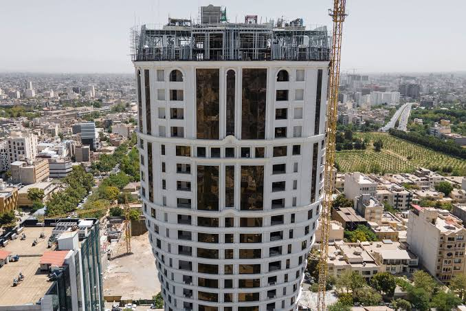
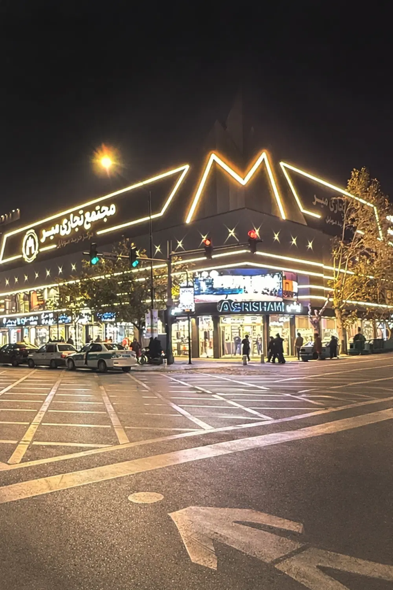
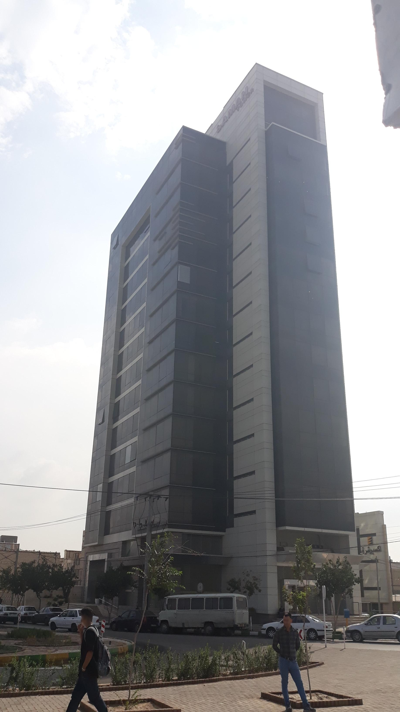

نصب دوربین مداربسته
اجرای سیستم دوربین مداربسته با جانمایی مناسب و توجه به نقاط حساس محیط.
طراحی، نصب، راهاندازی و پشتیبانی سیستمهای نظارت تصویری برای منزل، فروشگاه، دفتر، مجتمع، کارگاه و سایر فضاها در سراسر مشهد.
از انتخاب تجهیزات تا نصب و راهاندازی، مسیر اجرای سیستم نظارتی را یکپارچه پیش میبریم.
اجرای سیستم دوربین مداربسته با جانمایی مناسب و توجه به نقاط حساس محیط.
بررسی محیط و طراحی ساختار نظارتی متناسب با نیاز و کاربری پروژه.
تنظیم و راهاندازی دستگاه ضبط، دوربینها و دسترسی به تصاویر.
اجرای زیرساخت ارتباطی موردنیاز برای سیستم نظارت تصویری پروژه.
بررسی مشکلات سیستمهای موجود و کمک به رفع اختلالات دوربین و ضبطکننده.
افزایش تعداد دوربینها و توسعه سیستم نظارتی متناسب با نیاز جدید.





آروند ارتباطات ماهان آماده ارائه خدمات سیستمهای نظارتی در مناطق مختلف شهر مشهد است.
شناخت کاربری و نقاط موردنیاز برای نظارت.
انتخاب جانمایی و ساختار مناسب سیستم.
نصب تجهیزات و اجرای زیرساخت موردنیاز.
تنظیم نهایی و تحویل سیستم آماده استفاده.
بله، محدوده ارائه خدمات آروند ارتباطات ماهان سراسر شهر مشهد است.
ساعات کاری مجموعه از ساعت ۸ صبح تا ۱۶ است.
بله، سیستم نظارتی میتواند متناسب با کاربری و شرایط هر فضا طراحی و اجرا شود.